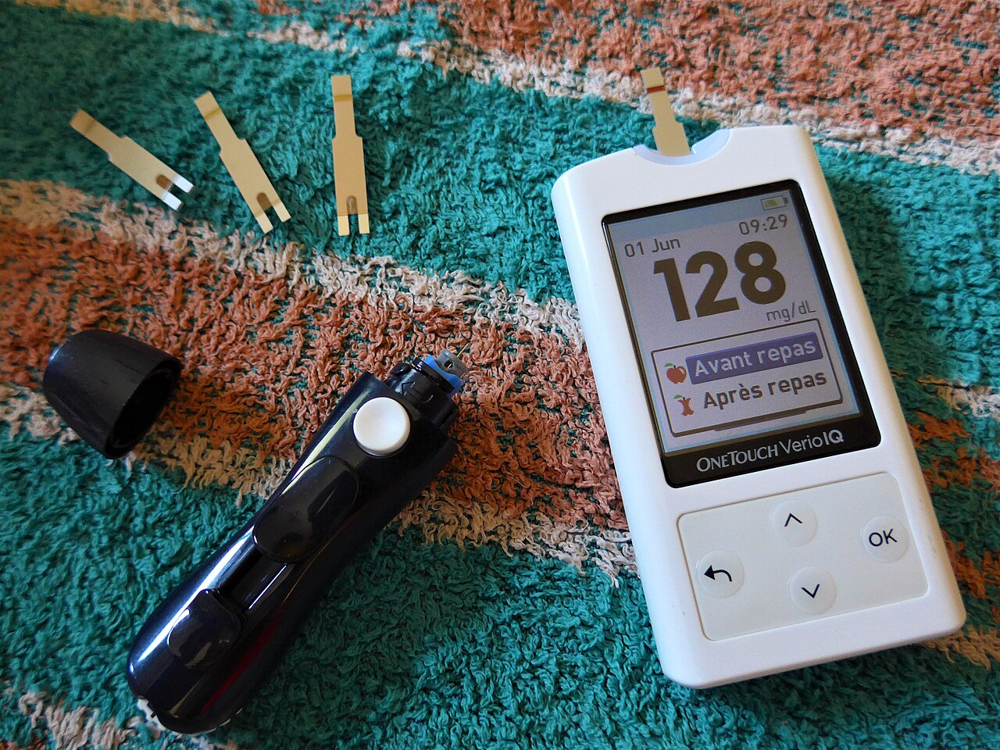

Nuestras áreas
Selecciona un apartado para conocer sus funciones y la forma en que contribuye a la asistencia social en el municipio.
Presidencia
Encabeza el Sistema Municipal DIF y orienta las acciones de asistencia social.
Conocer más →
Secretaría Particular de la Presidencia
Coordina la agenda, la atención ciudadana y la comunicación de la Presidencia.
Conocer más →
Dirección General
Dirige la operación, los programas y los recursos de la institución.
Conocer más →Servicios de Salud, Educativos y Asistencia Social
Brinda servicios de salud, educación y asistencia social a las familias del municipio.
Conocer más →Servicios destacados
Conoce algunos de los servicios con los que el DIF Cuautitlán acompaña a las familias del municipio.


Asistencia social en imágenes
Algunas de las personas y temas a los que se dirige nuestro trabajo: familias, niñez, personas adultas mayores, salud, nutrición y rehabilitación. Haz clic en una imagen para verla en grande.

Fotografías de uso libre tomadas de Wikimedia Commons. Ver créditos y licencias.
Preguntas frecuentes
Respuestas rápidas para orientarte antes de acudir o comunicarte con nosotros.
¿Dónde se encuentra el DIF Cuautitlán?
Av. 16 de Septiembre 328, Int. 42, Col. Centro, 54800 Cuautitlán, Estado de México. El horario es aproximadamente de lunes a viernes de 8:00 a 16:00 h; confirma el horario vigente en nuestras redes oficiales.
¿Cómo solicito un servicio o apoyo?
Revisa en este sitio el área que corresponde a tu necesidad y comunícate al 55 7701 7894 o al correo comunicacion@difcuautitlan.gob.mx. El personal te indicará los requisitos y los pasos a seguir.
¿Qué hago si una niña, niño o adolescente necesita protección?
Acude a la Procuraduría de Protección de Niñas, Niños y Adolescentes, que atiende de lunes a viernes de 9:00 a 18:00 h. Si hay una emergencia, llama de inmediato al 911.
¿Dónde consulto información de transparencia?
En la Unidad de Transparencia y en el sitio oficial difcuautitlan.gob.mx.
¿Cómo me entero de convocatorias y jornadas?
Síguenos en nuestras cuentas oficiales de Facebook y TikTok, donde publicamos horarios, convocatorias, inscripciones y jornadas.
Contacto y redes sociales
Síguenos en nuestras cuentas oficiales para conocer horarios, convocatorias, inscripciones y jornadas.
Cómo llegar
Ubicación aproximada del centro de Cuautitlán. Abrir mapa más grande · © colaboradores de OpenStreetMap.
Misión
Promover el desarrollo integral de las personas y las familias de Cuautitlán, mediante programas de asistencia social que atiendan a niñas, niños, adolescentes, personas adultas mayores y personas con discapacidad.
Visión
Ser una institución cercana, transparente y eficiente, que contribuya a que cada familia del municipio tenga mejores oportunidades y una vida digna.